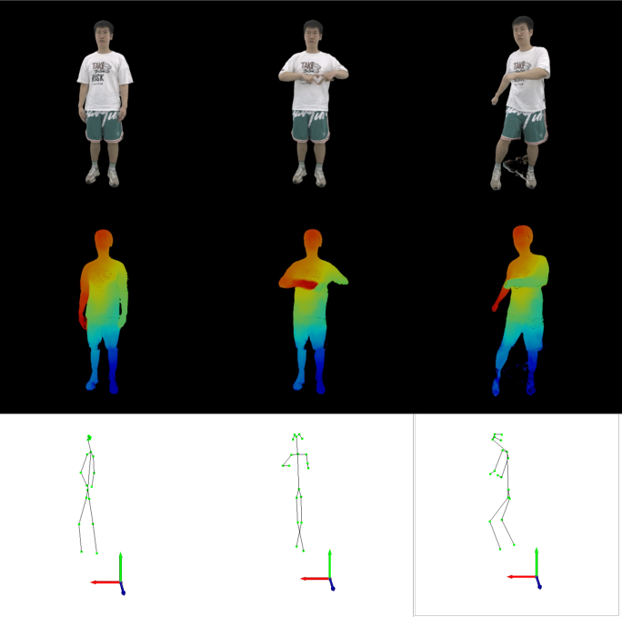
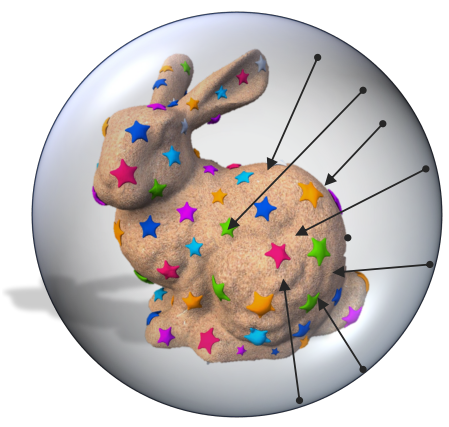
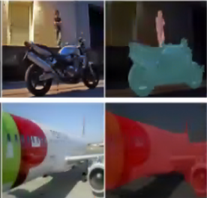

|
Cheng-You Lu I am a PhD student at the University of Technology Sydney's Human-centric Artificial Intelligence Centre in Australia. My research focuses on developing a 3D reconstruction system using drones, supervised by Prof. Chin-Teng Lin from UTS and co-advised by Prof. Yu-Lun Liu from NYCU. I also have an informal cooperation with Prof. Srinath Sridhar from Brown University.
I received my Master's degree in Computer Science from Brown University under the supervision of Prof. Srinath Sridhar. I earned my Bachelor's degree in Computer Science from NYCU under the supervision of Prof. Wen-Hsiao Peng. |
{kind=link}
News
|

|
AEGIS: Human Attention-based Explainable Guidance for Intelligent Vehicle Systems
Zhuoli Zhuang, Cheng-You Lu, Yu-Cheng Fred Chang, Yu-Kai Wang, Thomas Do, Chin-Teng Lin CHI, 2025 project page / arXiv AEGIS, a Human Attention-based Explainable Guidance for Intelligent Vehicle Systems, leverages a pretrained human attention model to identify critical regions of interest for decision-making. |
|

|
HFGaussian: Learning Generalizable Gaussian Human with Integrated Human Features
Arnab Dey, Cheng-You Lu, Andrew I. Comport, Srinath Sridhar, Chin-Teng Lin, Jean Martinet Technical Report, 2024 project page / arXiv HFGaussian, a generalizable 3D Gaussian Splatting that can estimate novel views and human features, including the 3D skeleton, 3D keypoints, and dense pose, from sparse input images in real time. |

|
DiVa-360: The Dynamic Visual Dataset for Immersive Neural Fields
Cheng-You Lu1, Peisen Zhou1, Angela Xing1, Chandradeep Pokhariya , Arnab Dey, Ishaan N Shah, Rugved Mavidipalli, Dylan Hu, Andrew Comport , Kefan Chen, Srinath Sridhar CVPR, 2024 (Highlight) project page / arXiv A high-quality and high-frame-rate multi-view dataset for long-duration dynamic radiance fields. |
|

|
NeuralODF: Learning Omnidirectional Distance Fields for 3D Shape Representation
Trevor Houchens1, Cheng-You Lu1, Shivam Duggal, Rao Fu, Srinath Sridhar Technical Report, 2022 project page / arXiv Omnidirectional Distance Fields (ODFs), a 3D shape representation that stores distances from any 3D position in any direction, along with efficient algorithms for converting ODFs to and from common 3D formats. |

|
Video Rescaling Networks with Joint Optimization Strategies for Downscaling and Upscaling
Yan-Cheng Huang, Yi-Hsin Chen, Cheng-You Lu, Hui-Po Wang, Wen-Hsiao Peng, Ching-Chun Huang CVPR, 2021 project page / arXiv Multi-input Multi-output Video Rescaling Network (MIMO-VRN), a new strategy for downscaling and upscaling a group of video frames simultaneously. |
|

|
Weakly-Supervised Image Semantic Segmentation Using Gaph Convolutional Networks
Shun-Yi Pan1, Cheng-You Lu1, Shih-Po Lee, Wen-Hsiao Peng ICME, 2021 project page / arXiv A GCN-based framework for weakly-supervised image semantic segmentation, improving pseudo label quality via Laplacian and entropy regularization. |
|
Template from Jon Barron |